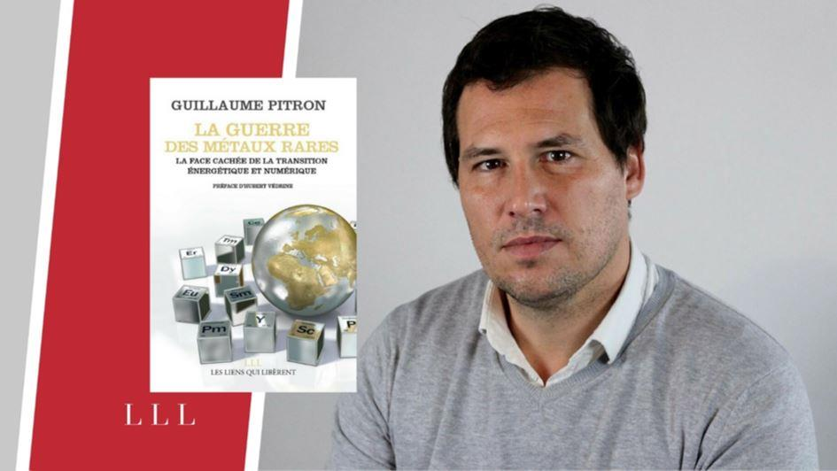
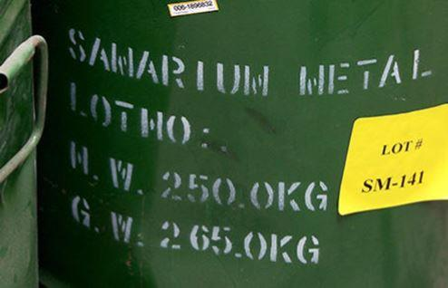
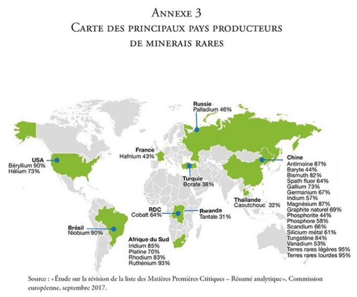
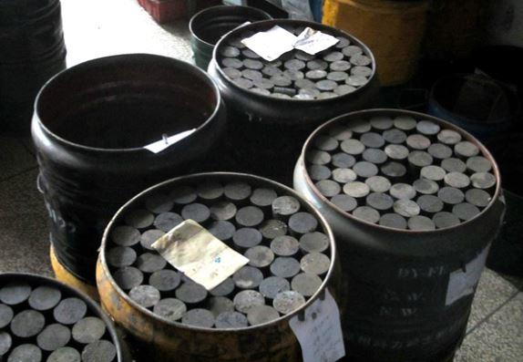

Le 25 octobre dernier, je me suis rendue à l’UMONS (Université de Mons-Belgique), pour assister à la conférence de Guillaume Pitron, journaliste et auteur du livre choc « la guerre des métaux rares. La face cachée de la transition énergétique et numérique ». Cette conférence était organisée par le collectif citoyen « Mons en transition » en partenariat avec le « Conseil de développement durable » de l’université.
Quels messages devons-nous retenir des six années d’enquête où Guillaume Pitron a parcouru le monde à la recherche d’informations essentielles à notre compréhension de ce que l’on nomme communément la transition énergétique ?
Après la machine à vapeur et sa matière première le charbon, le moteur thermique et le pétrole, voici venue l’ère des technologies vertes (la green tech) et des nouvelles technologies du numérique avec les métaux rares. Ce « new oil » est un danger pour la planète générant de nouveaux enjeux géopolitiques, économiques, politiques, humains et sociaux pour les prochaines années.
Toutes ces nouvelles technologies incluant la green tech comme la voiture électrique, le téléphone portable, les panneaux solaires, les éoliennes, la fibre optique, la tablette, la robotique, l’intelligence artificielle, la cybersécurité, les biotechnologies médicales, les objets connectés, la nanoélectronique, les voitures sans chauffeur…ne peuvent se passer de métaux rares et de terres rares pour fonctionner.
Cette transition énergétique n’est pas, comme les politiques peuvent vous le dire, une simple avancée technologique mais une véritable révolution économique.
Citons pour illustrer quelques métaux rares que nous retrouvons dans un téléphone portable de type IPhone ; pour la batterie, lithium et cobalt, pour l’écran tactile, indium, silicium, yttrium, lanthane, terbium, praséodyme, europium, dysprosium gadonium, pour l’électronique, argent, nickel, dysprosym, phosphore, arsenic, gallium, néodyme, terbium, gadolinum, praséodyme, silicium, etc.
Un véhicule électrique et hybride peut contenir entre 9 et 11kg de terres rares (deux fois la quantité trouvée dans un véhicule à essence). Ces terres rares sont par exemple le lanthane et le cérium pour les piles hybrides NiMH, le zirconium pour le convertisseur catalytique, le néodyme pour les phares, le cérium pour les parebrises anti-UV, ou les vitres et miroirs, l’europium, l’yttrium, le cérium, pour l’écran ACL, le néodyme, le praséodyme, le dysprosium, le terbium pour les moteurs et générateurs électriques hybrides.
Il faut quelques 70Kg de matières pour fabriquer un téléphone portable de 120g.
Or, parmi les métaux rares, moins de 1% de terres rares sont recyclables. Rappelons que les terres rares légères ou lourdes sont des sous métaux des métaux rares.
La conclusion est rapide ! Pour être propre nous salissons…et détruisons.
L’enjeu géopolitique est d’envergure. Qui produit ces métaux rares que nous utilisons tous ? où se trouvent les mines de terres rares ?
Une carte est publiée par la commission européenne tous les trois ans. Il s’agit de la carte des principaux pays producteurs de minerais rares (source « Étude sur la révision de la liste des Matières Premières Critiques – résumé analytique septembre 2017).
Sur cette carte, Il est visible que le principal pays producteur de « matières premières critiques » est la Chine. Le monde a de plus en plus besoin de terres rares pour son développement numérique et les technologies de l’information et de la communication.
La Chine qui possède toutes ces ressources a bien compris l’enjeu stratégique.
Elle détient en effet toutes ces ressources et fournit ces métaux indispensables au monde entier. Elle sait extraire et raffiner, polluant des villages entiers (les villages du cancer), des zones entières (mine de Baotou).
La Chine a sacrifié son environnement pour s’octroyer une part belle de la richesse produite par ces terres rares. La Chine est une « OPEP(1) » à elle seule qui détient 95% des matières premières stratégiques. Mais l’histoire ne s’arrête pas là…
La Chine ne veut pas seulement nous vendre les précieux métaux et terres rares, elle veut maintenant nous vendre les produits finis. Elle garde une partie de ces métaux rares pour ses propres industriels.
Par une stratégie de joint-venture avec les industriels étrangers les chinois entrent dans le capital social de ces entreprises et récupèrent ainsi bon nombre des brevets sur les co-innovations de la green tech et du numérique.
La Chine est devenue la grande gagnante économique de la transition énergétique. En matière d’écologie, elle fait de mieux en mieux. Évidemment ce n’est pas encore le niveau souhaité par le reste du monde, je fais ici référence à l’accord mondial sur le climat signé à Paris lors de la COP 21.
Par ailleurs, la Chine a déjà sécurisé ses ressources de cobalt en signant un accord avec des producteurs congolais. Elle a également sécurisé ses marchés.
Notons aussi qu’un autre pays l’Afrique du Sud où la « Reine du platine » du royaume de Bakofeng, une simple tribu assise sur les plus grandes réserves mondiales de platine, renégocie ses contrats miniers pour faire valoir la prééminence du producteur sur l’acheteur. C’est une vraie multinationale !
Mine de platine de Marikana
« Le marché des terres rares n’est ni stable ni même prévisible ». C‘est en effet, ce que semble affirmer Guillaume Pitron.
Ne dit-on pas que « qui contrôle la matière, contrôle l’industrie ! ».
Alors, faudrait-il réouvrir des mines en Europe ? Il en est question et cela se discute actuellement. La France, ex géant minier avec à sa tête un président « pro-mines » relance le sujet. Guillaume Pitron nous dit dans son livre « La polémique sur les mines nous invite à prendre conscience de ce que les Chinois ont compris depuis des lustres : notre modèle de développement recèle d’indébrouillables contradictions. Entre les rêves d’un monde plus vert et la matérialité d’un monde plus technologique, il n’est pas évident de choisir… »
D’autre part, le monde ne nous attend pas. Le 11 septembre dernier, Vladimir Poutine rencontrait le président chinois Xi Jinping. Les deux chefs d’état ont annoncé leur volonté de passer aux devises nationales dans leurs échanges commerciaux. La « dédollarisation » du monde permettrait-elle de signer des accords plus engageant encore sur le prix des matières premières stratégiques comme les métaux rares ? Il en va de l’avenir de la monnaie tant l’euro que celle qui régit encore les échanges mondiaux, le dollar.
Nous pourrions également nous poser la question du financement du terrorisme par les métaux rares comme ce fut le cas pour Al Qaïda avec le pétrole ?
Dans son livre, Guillaume Pitron pose la question de la course aux missiles intelligents. Les terres rares vont changer le visage des conflits modernes. La maîtrise par Pékin de technologies balistiques avancées a déjà modifié les rapports de force en mer de Chine méridionale. Rappelons que Pékin avait soutenu Bill Clinton et son parti démocrate en 1996. Antérieurement, en 1973, les Etats-Unis votèrent une loi interdisant l’achat auprès de fournisseurs étrangers de métaux spécialisés destinés à être incorporés dans des technologies de l’armement (cobalt, zirconium, titane) privilégiant ainsi le tissu industriel national pour conserver une souveraineté d’approvisionnement. En 1990, arrive le jet F-35, concurrent américain du Rafale français, commercialisé à plus de 2500 exemplaires. Mais en 2012, le scandale éclate : les aimants de terres rares chinois sont intégrés dans des radars, trains d’atterrissage et systèmes informatiques du F-35 malgré l’interdiction ! Fallait-il attendre l’avancée technologique des industriels et retarder la sortie du F-35 ? À l’heure actuelle la Chine fournit toujours les aimants aux américains.
L’empire du milieu fabrique jusqu’à 75 % d’aimants pour la planète et les relations américano-chinoises ne sont pas au mieux…une prochaine guerre en Chine méridionale est avancée par l’entourage de Donald Trump d’ici 10 ans. Comment la Chine va-t-elle exploitée cette dépendance américaine ?
Par contre, quant aux réserves de métaux rares et terres rares, celles-ci avoisineraient les 700 à 800 ans considérant que les océans regorgent de ces métaux ainsi que les astéroïdes. D’ailleurs Obama disait à ce propos en 2015 que celui qui irait chercher les métaux rares dans l’espace en aurait la propriété ! Ce qui est évidemment contraire au traité de 1967 qui dit que l’espace n’appartient à personne !
Allons-nous exploiter le plancher des océans ? piller les autres planètes ?
Guillaume Pitron nous dit : « Le projet, entonné en chœur par tous les avocats de la transition énergétique et numérique, de réduire l’impact de l’homme sur les écosystèmes a en réalité conduit à accroître notre mainmise sur la biodiversité. Quant à notre nouvelle convoitise pour l’espace, elle balaie d’ultimes interdits. »
Alors, réfléchissons bien avant d’acheter un véhicule électrique ou un nouveau portable…Le mensonge politique consiste aujourd’hui à tirer sur le diesel à boulet rouge nous poussant à acheter des véhicules ou des matériels non polluants à l’utilisation mais qui contribue largement dans son process à la destruction de la planète. Au-delà c’est le mensonge de la publicité et des politiques pour satisfaire un électorat qui n’a pas encore pu entendre la vérité.
Sachons voir la matérialité invisible. Pour extraire tous ces métaux rares contenus dans les roches il faut un process industriel sale qui coûte. Et là encore nous prenons tous les coûts de plein fouet ; quel coût énergétique ? quel coût économique ? quel coût social ? pour quels impacts sur l’écologie ?
Comme chantait Jacques Dutronc, 700 millions de chinois et moi et moi et moi…c’est propre devant chez moi !
Alors quel est le sens de ce saut technologique ? Faire dépenser aux ménages ce qui leur reste d’argent !
La conférence de Guillaume Pitron ouvre nos yeux sur la vérité et nous pose la question à savoir « saurons-nous puiser en nous l’antidote aux métaux rares ? ».
M-S. P.
(1) OPEP : Organisation des pays exportateurs de pétrole
Partager cette page